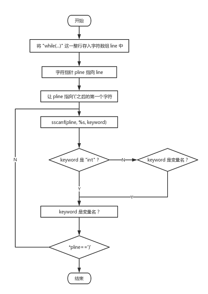

本文档主要介绍队伍在一周内完成的此次种子杯初赛试题的程序的实现方式以及实现原理等内容
队伍：Photon
队员：李睿光 张铭 胡东明
编译环境：Windows 10 64bit + Visual Studio 2015
使用语言：C（主要）+ C++（少量使用了部分STL库中的类）
程序主要分为以下几个模块：
PreDeal.cpp
void PreDeal(void);\\进行文件预处理，生成.tmp临时文件
VarScope.cpp
inline void Push_Scope(char *scope_name);\\作用域入栈
inline void Pop_Scope(void);\\作用域出栈
void Push_Var(char *var_name, int var_value);\\存储新变量
int Get_Var(char *var_name);\\获取变量值
void Set_Var(char *var_name, int var_value);\\改变变量值
Calculator.cpp
int Calculator(char *string_in);\\计算传入表达式，返回值
Process.cpp
void Order(void);\\处理顺序结构
void Branch(void);\\处理循环结构
void Loop(void);\\处理分支结构 通过这样的模块函数的相互调用，有效地解决了语句块嵌套的问题。
程序功能的主要实现方法如图所示，通过三个模块函数的相互调用，重构源程序的逻辑，即整个源代码、所有的语句块都通过顺序函数来进入并处理，执行相应操作（定义变量、赋值、运算、打印行号等），当遇到对应关键字，调用分支函数或循环函数，在判断条件表达式后，执行相应操作（语句块位置跳转），随后调用顺序函数进入语句块执行操作，这样重复地进行。
该部分在提交的源代码的PreDeal.cpp中。
文件预处理部分，每次读取源文件一行的内容，在行内处理字符，执行相应操作。
主要完成了以下工作：
删除注释，遇到行内注释("//")直接跳过该行剩余部分，整行注释(块注释"/**/"内部或整行"//")加空行保证行号不变
将行内的多条语句分成多行，即处理完后每一行只有一条语句
词法分析，将关键字、变量名、字符串、运算符、其它特殊符号等通过前后加空格的方式分开
设置全局变量(vector<int> LINE)存储临时文件-原始文件的行号映射，便于对临时文件进行处理时查找原始文件行号
具体预处理效果请参见.tmp文件
该部分在提交的源代码的VarScope.cpp中
提交程序采用的保存作用域与对应变量键值对的方式为建立了作用域与变量对应的十字链表。
主链表存储结构为双向链表，逻辑结构为栈，即采用了链栈。结点为作用域结点，数据域保存了作用域名称（Order、Branch、Loop），指针域分别是指向当前作用域下变量链的指针（var）,指向前驱作用域结点的指针（prior）和指向后继作用域结点的指针（next）。
由于作用域的进入退出符合栈的后进先出规则，故在上述基础上采用栈的操作方式。进入语句块后，将该作用域压栈，新建结点，栈顶指针（CUR_SCOPE）指向当前作用域；退出语句块后，当前作用域出栈，栈顶指针指向上一个作用域。
在VarScope.cpp中实现了几个对变量操作的函数，分别是：
根据上述查找规则，若内层作用域声明了与外层作用域同名的变量，则查找时会先查找到内层作用域的变量，并返回值或进行修改，并不会影响到外层作用域的该同名变量的值；当退出内层作用域后，作用域栈顶出栈，栈顶指针（即当前作用域指针）指向上一层作用域，此时便不会再访问到已经退出的作用域及其内部变量。
break语句的判断是在顺序模块函数内部进行，但其实现原理是通过这里的作用域-变量十字链表结构实现。
实现方式：
1. 设置了一个break_flag全局变量，初值为0；
2. 当遇到break，break_flag置为1，判断当前栈顶作用域：
该部分为Calculator.cpp文件内所有内容
实现说明：可计算程序中所有合法且规范的表达式的值并返回该值。
总体算法思想为将表达式转换成逆波兰表达式，再求逆波兰式的值。其中表达式可能含有变量名，'++','--'和所有比较运算符，这些都不是能直接求出逆波兰表达式的，所以需要对表达式进行转换得到目标表达式，再求目标表达式的逆波兰式，最后计算出值。
该部分实现将原表达式转换成目标表达式，如
int i = -3；
int t = -5；
int j = i++ + 4*i - 9/3 <= i - t*3 + 15/t;
这样经过转换之后即可得到目标表达式有三个："0-3"，"0-5"，"0 - 3 - 4 * 3 - 9 / 3 <= 0 - 3 + 5 * 3 - 15 / 5"。
这里需要对转换目标表达式的函数做几点说明：
可以处理表达式内的不加括号的负数或正数，即能处理“ 1 * - 9 ”和“ 1 * + 9 ”计算分别得到 - 9 和 9 。当然更复杂的情况也能处理正确。
表达式开头若有'-'，则生成的目标表达式以“0”开头，否则以“0+”开头，这样处理是为了能方便生成正确的逆波兰表达式。若遇到变量为负值，则看其前面的运算符是'+','-','*','/'中的哪一个，再根据正负得负，负负得正的原则处理四则运算，如：p为-2，遇到了“ - 3 + p ”，那么目标表达式就是“ - 3 - 2 ”；若为“ - 3 - p ”，则目标表达式为“ - 3 + 2 ”；若为“ * p ”,则判断‘ * ’前面是‘ + ’还是‘ - ’，举例中为‘ - ’，则转换成“ + 3 * 2 ”;' / '的处理同‘ * ’。经过在目标表达式在前述的处理加上“ 0 ”或“ 0 + ”后，变量名前一定会有' + '或者' - '。这样更能方便处理。
若处理到了自增/自减运算符，目标表达式会跳过这些运算符，在Exp_Input函数中单独处理变量值的增减。
若处理到了比较运算符，则比较运算右边的子表达式的处理同（2）
对于变量名的处理，是通过变量树返回其值，再通过itoa函数返回其字符串形式，用指针指向该值的字符串，再逐字符处理
本部分可能不能将所有实现细节一一叙述详尽，裁判组对实现过程有疑问可看源码，源码有详细注释
程序内部指定将' <= ',' >= ',' != ',' == '在处理时分别用' @ '，' # '，' $ ',' % '代替压栈从而优化处理
基本算法如下：
将目标表达式压栈，得到其后缀表达式，其中需要考虑' <= ',' >= ',' != ',' == '的转换的问题和运算符优先级问题。
计算后缀表达式，返回表达式的值，为整型。程序内规定若比较运算结果为真则返回1，为假则返回0。
上述的三个表达式的逆波兰表达式分别为
0 3 -
0 5 -
0 3 - 4 3 * - 9 3 / - 0 3 - 5 3 * + 15 5 / - @
其中使用' @ '代替' <= '入栈，优化处理
上述逆波兰表达式输出值为
-3
-5
1
转换原表达式为目标表达式的过程中给目标表达式开头或者比较运算符右边表达式加" 0 "或者" 0 - "，这样使得每个单目运算符均有左右操作数,能方便构成逆波兰表达式，否则"- 9 + 4 "不方便进栈，因为开头负号没有左操作数，加上'0'则开头负号有左操作数，方便进栈。再考虑" p + 4",加上" 0 + "之后,若ｐ是负数，则目标表达式变成"0 - |p| ",若为正数则为"0 + p"。
四则运算的正负得负，负负得正的实现，见上述给出的代码示例
生成逆波兰表达式。根据目标表达式运算符的优先级，设计数字栈和运算符栈，压栈时遇到数字字符直接压栈，遇到运算符需要比较运算符栈栈顶运算符的优先级，栈顶运算符优先级不应该低于将要压栈的运算符，否则一直出栈到栈顶运算符优先级高于（不含等于）将要压栈的运算符。
处理逆波兰表达式。对逆波兰表达式压栈，根据（1），每个运算符都是有左右操作数的，这样遇到运算符，则一定可以出栈左右操作数并计算。
为了使生成目标表达式过程时间复杂度和空间复杂度降低，代码可读性增强，计算器内单独处理表达式中变量自增自减的情况
该部分在提交的源代码中的Process.cpp中的Order()函数中实现
顺序结构处理经过预处理源代码文件得到的中间临时文件.tmp，是程序的主要处理模块。该模块中主要进行的工作为：关键字识别、变量名提取、保存/更新变量键-值对。
本题中，需要判断的关键字为：
由于预处理中添加的空格已经将变量名和其他字符隔开，直接提取int后、等号（若不赋值为逗号、分号）之间的字符串即可
变量名提取中获得变量名，提取等号和逗号或分号之间的表达式送入计算器求得变量值，调用Push_Var/Set_Var(var_name,var_value)即可
该部分在提交的源代码中的Process.cpp中的Branch()函数中实现
实现说明：赛题文档中关于分支结构的条件判断均有左右大括号，我们额外实现了对于if/else if/else后面不加大括号的情况，但只限后跟一条语句
Branch()和Order()形成相互调用，在程序中遇到if即调用Branch，Branch内需要预处理当前层的分支结构，即记录该层的分支结构每个条件块的结束行号和结束行的文件指针所指的位置，预处理结束后需要判断进入哪个条件语句块，处理完后返回顺序结构。
理解说明：由递归思想，分支结构中存在嵌套，故遇到分支结构，均以当前层分支结构理解
处理过程及算法如下：
typedef struct END
{
long end_line;//存储文件指针位置，即可通过ftell()函数获取该文件指针相对于文件首部的偏移量
int end_line_num;//存储执行行的行数
}END;设立brace表示大括号数量，has_brace表示分支块中是否有大括号。设计结构变量 END存储特定行的行数和改行文件指针位置也即相对于文件首部的偏移量，设立该结构变量类型的队列 end。
初始化brace和has_brace为0。
if/else if/else下不只一条语句则会有大括号括起来，在程序内规定条件块的结束语句位置为if/else if/else后：若有大括号，则指向最后一个' } '，若只有一条语句，则指向该语句。
如果当前分支结构中有大括号，则一定会在读非空行的一开始就会遇到' { '，则brace++，并且has_brace记为1。遇到' } '则brace--，利用左右大括号数目的对称性，在遇到当前层的条件语句块结束时，即遇到最后一个' } '，brace值一定为0，这时需要记录在.tmp中此行的行数和文件指针的位置到结构类型中并将其入队列。并且将has_brace重置为0后break。
如果当前分支结构中没有大括号，则会进入has_brace为0的判断，这时和（3）类似，需要记录在.tmp中此行的行数和文件指针的位置到结构类型中并将其入队列。并且将has_brace重置为0后break。
处理完一个语句块后读下一行内容，跳过.tmp文件中的空行。因为else if和else均含有else，故sscanf读进字符串但无法匹配到else，则说明当前分支块结束
预处理结束后，队列中从第一个元素开始到最后一个元素分别记录了不同条件语句的结束位置，其中特别的是最后一个元素是当前分支的结束语句位置。
预处理结束后，恢复初始文件指针位置和行数。再进入判断模块，即判断进入哪一个条件语句块，并处理break语句，完成条件语句块后须跳出当前分支块
处理过程及算法如下：
使用sscanf取出当前行的字符串，跳过空行并且在sscanf函数的format参数中用一句正则表达式（只字符串形式的正则表达式，未使用库函数）取出if或者else if括号内的表达式，调用计算器函数处理得到结果
判断结果是否为真，如果为真，递归调用Order，Order执行完将队列最后一个结构变量出队，这样就得到了整个分支的末行，因为一旦某个条件判断通过了，其后续条件判断都不用判断了。如果调用计算器得到的结果为假，则将队列头部出队，这样就得到了下一个条件判断的末行位置。
对于break的处理，在Order中已经处理过break，遇到break，则break_flag置为1，这样到Branch里遇到了break，直接将队列尾部结构变量出队，再将当前行指向该结构变量的行号，并且该结构变量的文件位置值赋值给全局文件指针。这样与Order()顺序结构处理函数的递归调用可以很好地处理分支结构，因为都是在本层的分支结构处理。
前文已说明下列功能的实现原理，此处只列举，不再赘述
分支结构的预处理
使用队列保存当前分支结构每个条件块的结束信息，包括行数和文件指针偏移量
brace的使用，判断左右大括号的个数
has_brace，用于处理省略大括号的条件语句
对于break的特殊处理
与顺序结构的处理函数Order的相互递归调用
该部分在提交的源代码中的Process.cpp中的Loop()函数中实现
//支持:
for(...; ...; ...)
printf("%d", i); //无大括号，只有一行
//不支持:
for(...; ...; ...)
if(...){ //无大括号，但有多行
...
}
else{
...
}//支持
do
i++;
while(i < 5)
//不支持
do
if(i < 0)
break;
while(i++, i<5)在处理完 "for(..;..;..)" 这一部分后，若for循环的条件成立，则直接调用顺序执行函数 Order() ， 若条件不成立，则直接跳到for循环的最后一行。
流程示意图:

代码示意:
CUR_LINE = endLine; //将行数定位到最后一行
fseek(PFILE, endPosition, 0); //将文件指针定位到最后一行
return;